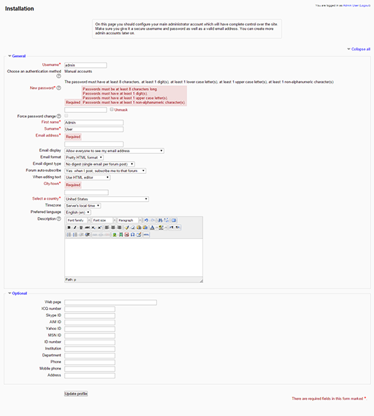

Install and configure Moodle on your LAMP server on Ubuntu, PHP, Applications
Install and configure Moodle on your LAMP server – Ubuntu
Difficulty: 1
Time: 30 minutes
Moodle is an acronym for Modular Object Oriented Dynamic Learning Environment. It is an open source Course Management System that enables the creation of an online learning site. Moodle has default features with an easy-to-use interface, personalized dashboard, progress tracking, and many other features. In administration, Moodle offers customizable site design and layout, secure authentication and mass enrollment, bulk course creation, and an easy backup.
It is assumed that you have sudo privileges. In addition, you need to install and configure LAMP for Ubuntu. Please refer to :
Install the required dependency
- Install curl and GD extensions for Moodle use.
sudo apt-get install php5-curl php5-gd
- Moodle uses
mysqli extension for database manipulation. Install mysqli using the following command:
sudo apt-get install php5-mysql
- Restart the Apache services to make the changes effective.
sudo service apache2 restart
Basic configuration
- Download the Moodle source from the official site.
cd /var/www/html
sudo wget http://download.moodle.org/download.php/direct/stable25/moodle-latest-25.tgz
- Extract the downloaded source using the following command:
sudo tar xzvf moodle-latest-25.tgz
- You will find the new directory added to the
moodle folder.
- To secure
moodle, change owner to root, and change the permission.
sudo chown -R www-data:www-data /var/www/html
- Moodle needs a folder for its temporary operations that can't be accessed from the web. Put the folder outside the server web root. To create it in your home directory, use the following command:
sudo mkdir /moodledata
- Make it writeable by the machine.
sudo chown www-data:www-data /moodledata
Create a database
- Create a blank database for the backend operation.
mysql -u root -p
CREATE DATABASE moodle;
- Exit from the
MySQL console by typing exit or press CTRL+C.
- After the configuration is complete you will see Server Checks and Installation page click on Continue button on both page.
Install Moodle
- Open the browser and type public IP or URL of moodle server as http://public_ip/moodle.
- After pressing Enter, you will find the first step of moodle installation process.
- Choose a language, and then click Next.

- Set the Data directory that you created earlier, and then click Next.
- Select a database driver to connect with the database (you can enter "root" and the MySQL password since you haven't created a database user),, and then click Next.

To avoid errors, use the driver that the database engine installed.
- Enter the database credentials to connect with the database, and then click Next.

- If the configuration fails, you will be asked to copy a certain block of text to the config file. This happens mostly because of the lack of ownership to the moodle directory. Make sure you have provided that and you can avoid making changes in the
config.php file.
- After the configuration is complete you will see Server Checks and Installation page click on Continue button on both page.
Update the site profile
- Update the profile for your site, fill the mandatory information fields, and then click Update profile.

- After updating the profile, you will be redirected to the Front page settings page. Enter your site name.

- Click Save changes. You will be redirected to the Moodle Home page, where you can manage your courses and web site.
Conclusion
In this article, you learned to install and configure Moodle on your LAMP server with Debian and Ubuntu.